这里向大家分享一下python爬虫的一些应用，主要是用爬虫配合简单的GUI界面实现视频，音乐和小说的下载器。今天就先介绍如何实现一个动态视频下载器。
爬取电影天堂视频
首先介绍的是python爬取电影天堂网站的视频(包括电影，电视剧，综艺等)，主要是用selenium动态网页技术加上简单的爬虫技术。
(1)电影网站首页面地址：https://www.dytt8.net/
(2)用到的技术：selenium模拟浏览器运行。
(3)首先要安装配置selenium库和不同浏览器和该库配合的插件。这里安装配置的过程略过。
(4)然后我们用下面的代码打开首页，并输出该网页的源码：
def getSource(url):
browser = webdriver.Chrome()
browser.get(url)
print(browser.page_source)
browser.close()
(5)然后我们找到搜索对应的网页元素标签，以及选择类型和立即搜索按钮对应的标签。
分别为：
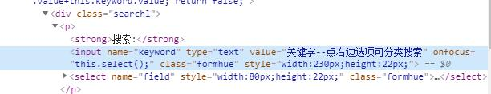
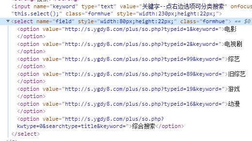
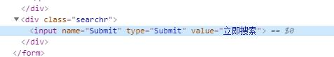
(6)然后我们用下面的代码把用户输入的信息模拟放到浏览器上
由于未加载完毕会进入广告页面，因此有需要改进的地方，这时就需要延长载入时间。这里有显示等待和隐式等待，用简单的隐式等待即可。
有时候会出现错误，因为掩盖的div可能会在进行一些操作后，会消失，比如页面还在loading中。这时候点击元素的话，就直接点击在loading的标签上，所以在这个操作前可以加个等待，让掩盖的div自行消失后，再等待左侧菜单到可点击状态即可；或者进行刷新的操作，此div即可消失，再等待左侧菜单到可点击状态即可。
代码为：
def putUserMessger(url,this_name,this_type):
'''
:param url: 浏览器网址
:param this_name: 需要下载的视频名
:param this_type: 需要下载的视频类型
'''
this_browser = webdriver.Chrome()
this_browser.implicitly_wait(10)
this_browser.get(url)
# 把下载的视频名和视频类型进行模拟浏览器匹配
# 搜索输入框的标签属性有name和class,这里用name属性进行获取
this_browser.find_element_by_name('keyword').send_keys(this_name)
time.sleep(2)
# 选择类型下拉框是html自带的下拉框，不是input做的假的下拉框
Select(this_browser.find_element_by_name('field')).select_by_visible_text(this_type)
time.sleep(2)
# 点击立即搜索按钮，submit就不是单纯的单击，它会涉及到前后台的交互
this_browser.find_element_by_name('Submit').click()
this_browser.close()
def main():
name = input('请输入视频名：')
type = input('请选择类型：')
url = 'https://www.dytt8.net/'
putUserMessger(url,name,type)但是还是会出现下面的问题：
selenium.common.exceptions.WebDriverException: Message: unknown error: Element <input name="Submit" type="Submit" value="立即搜索"> is not clickable at point (702, 220). Other element would receive the click: <div style="width: 1017px; height: 577px;"></div>
(Session info: chrome=73.0.3683.86)
(Driver info: chromedriver=73.0.3683.68 (47787ec04b6e38e22703e856e101e840b65afe72),platform=Windows NT 10.0.17134 x86_64)但是我们发现我们点击后的其实是有规律的，因此用另一个方法。
(6)二层页面配置参数及视频三层地址输出
我们先分析一下url：
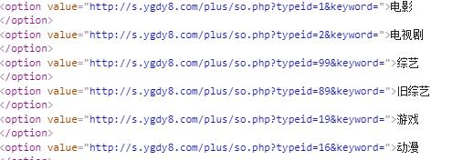
分析第二层页面地址为：
http://s.ygdy8.com/plus/so.php?typeid=1&keyword=%C4%E3%B5%C4%C3%FB%D7%D6是由http://s.ygdy8.com/plus/so.php?+typeid=视频编号&keyword=视频名gdk编码组成。因此需要先转化汉字为网页地址url的编码。
用下面的代码就可以构建一个需要的网址：
def main():
name = input('请输入视频名：')
type = input('请选择类型：')
ret = quote(name, encoding="gbk")
dict = {'电影':'1','电视剧':'2','综艺':'99','旧综艺':'89','游戏':'19','动漫':'16'}
url = 'http://s.ygdy8.com/plus/so.php?' + 'typeid=' + dict[type] + '&keyword=' + ret然后我们分析一下网页：
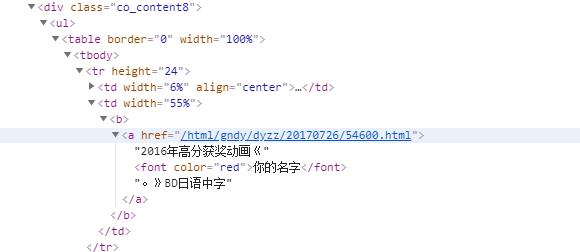
输出所有的视频信息和三级地址：
def putUserMessger(url):
'''
:param url: 视频网址
'''
this_browser = webdriver.Chrome()
this_browser.get(url)
# 用css选择器选择
input1 = this_browser.find_elements_by_css_selector('.co_content8 ul td a')
for i in input1:
print(i.text)
print(i.get_attribute('href'))
this_browser.close()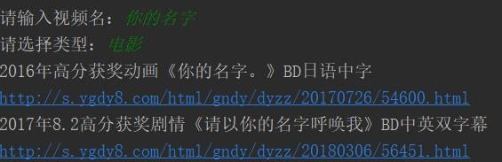
(7)三级网页找到下载界面
下载的链接的位置是：
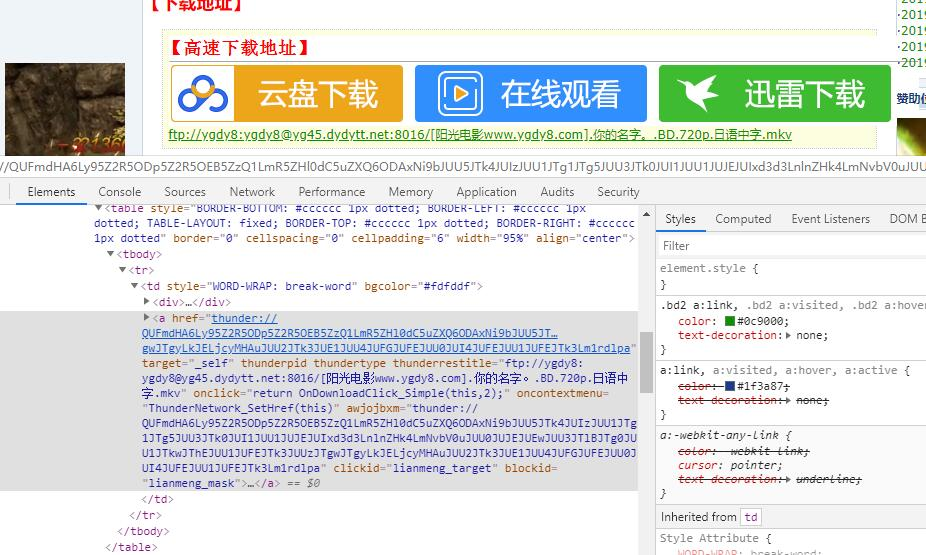
然后用request配合pyquery下载即可。
下载链接如下：
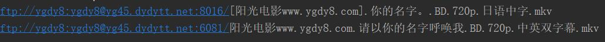
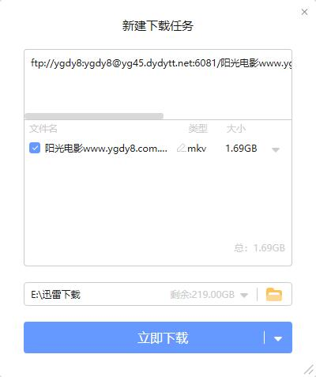
(8)完整代码
这里没有用到数据库，上面的代码再配合界面，这里只暂时没有界面的代码如下：
# encoding: utf-8
from selenium import webdriver
from urllib.request import quote
import requests
from pyquery import PyQuery as pq
from tkinter import *
def putUserMessger(url):
'''
:param url: 视频网址
'''
last_url = {}
this_browser = webdriver.Chrome()
this_browser.get(url)
# 用css选择器选择
input1 = this_browser.find_elements_by_css_selector('.co_content8 ul td a')
for i in input1:
#用字典保存视频的名字与下载地址
last_url[i.text] = i.get_attribute('href')
this_browser.close()
return last_url
def download(all_url):
this_download = {}
for name,url in dict.items(all_url):
r = requests.get(url)
r.encoding = r.apparent_encoding
doc = pq(r.text)
this_url = doc('#Zoom a')
this_download[name] = this_url.attr('href')
return this_download
type = 0
name = 0
def myRadiobutton():
global type
type = v.get()
def my_all():
name = var.get()
ret = quote(name, encoding="gbk")
url = 'http://s.ygdy8.com/plus/so.php?' + 'typeid=' + str(type) + '&keyword=' + ret
all_url = putUserMessger(url)
result = download(all_url)
print(result)
# 创建一个主窗口，用于容纳整个GUI程序
root = Tk()
# 设置主窗口对象的标题栏
root.title("视频下载器")
L1 = Label(root, text="请选择类型：")
L1.pack(side = TOP)
v = IntVar()
Radiobutton(root, text='电影', variable=v, command=myRadiobutton,value=1).pack(anchor=W)
Radiobutton(root, text='电视剧', variable=v, command=myRadiobutton,value=2).pack(anchor=W)
Radiobutton(root, text='综艺', variable=v, command=myRadiobutton,value=99).pack(anchor=W)
Radiobutton(root, text='旧综艺', variable=v, command=myRadiobutton,value=89).pack(anchor=W)
Radiobutton(root, text='游戏', variable=v, command=myRadiobutton,value=19).pack(anchor=W)
Radiobutton(root, text='动漫', variable=v, command=myRadiobutton,value=16).pack(anchor=W)
var = StringVar()
L2 = Label(root, text="请输入视频名")
L2.pack(side = LEFT)
E1 = Entry(root, bd=5,textvariable=var)
E1.pack(side = RIGHT)
B = Button(root, text="点我",command=my_all).place(x=120, y=80)
# 显示界面，进入主事件循环
root.mainloop()结果如下：
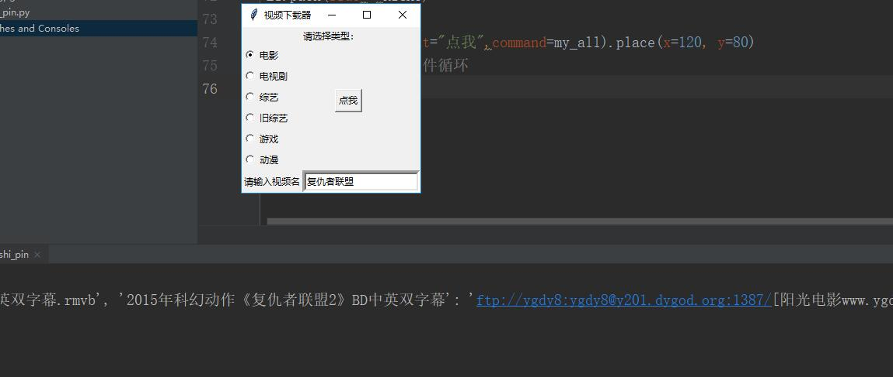
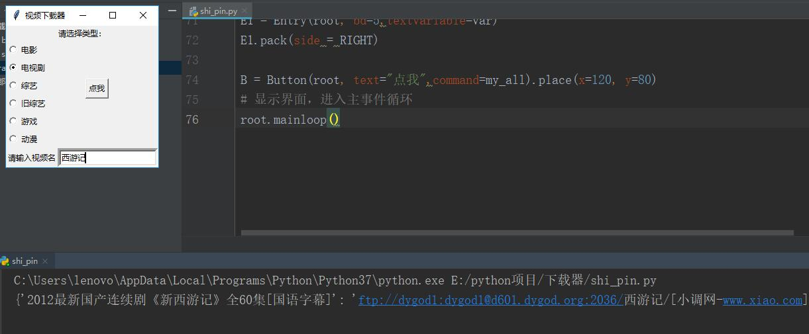
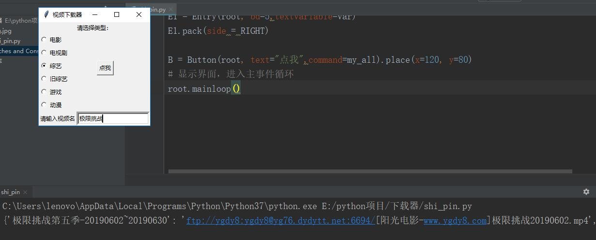